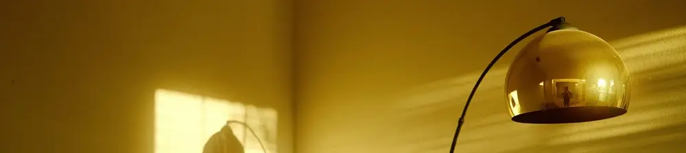

Tips Tata Cahaya Rumah ala Kafe: Bikin Ruangan Nyaman & Estetik

Pernahkah Anda bekerja atau bersantai di kafe dan merasa suasananya begitu nyaman dan membuat betah? Selain interior yang apik, sofa empuk, dan alunan musik, ada satu elemen rahasia yang seringkali menjadi kunci kenyamanan tersebut: pencahayaan. Penataan cahaya yang tepat secara dramatis dapat mengubah mood sebuah ruangan, membuatnya terasa lebih hangat dan menyenangkan.
Kabar baiknya, Anda tidak perlu merombak seluruh rumah untuk mendapatkan suasana nyaman ala kafe. Dengan memahami beberapa prinsip dasar tata cahaya, Anda bisa menyulap ruangan di rumah menjadi tempat paling favorit untuk beraktivitas dan beristirahat.
Lantas, apa saja rahasia di balik pencahayaan yang nyaman itu? Mari kita bedah tips praktisnya.
-
Hindari Silau dengan Pencahayaan Tidak Langsung (Indirect Lighting)
Kesalahan paling umum dalam menata lampu adalah membiarkan sumber cahaya yang tajam menyorot langsung ke mata. Cahaya yang terlalu silau (dikenal juga sebagai glare) membuat mata cepat lelah dan terasa tidak nyaman.
Solusinya adalah menerapkan teknik indirect lighting atau pencahayaan tidak langsung.
Caranya adalah dengan mengarahkan sumber cahaya ke permukaan lain seperti dinding atau plafon. Permukaan tersebut akan memantulkan kembali cahaya secara lebih merata dan lembut ke seluruh ruangan. Anda bisa menikmati ruangan yang terang tanpa harus melihat bola lampu yang menyilaukan.
Contoh Praktis: Pasang LED strip di ceiling cove (cekungan pada plafon) atau di belakang panel TV. Cahaya yang terpantul dari plafon akan memberikan penerangan umum yang lembut dan modern.
-
Gunakan Diffuser untuk Melembutkan Cahaya
Jika Anda harus menggunakan lampu yang cahayanya menyorot langsung, pastikan lampu tersebut memiliki diffuser. Diffuser adalah lapisan penutup (biasanya berwarna putih susu atau buram) yang berfungsi untuk menyebarkan titik-titik cahaya.
Prinsip kerjanya mirip seperti awan di langit. Awan berfungsi sebagai diffuser alami raksasa yang menyebarkan cahaya matahari, sehingga cahayanya tidak terlalu terik dan nyaman dilihat. Tanpa awan, melihat matahari langsung tentu akan sangat menyilaukan, bukan?
Lampu-lampu modern seperti lampu bohlam LED atau downlight umumnya sudah dilengkapi diffuser. Jadi, pastikan Anda memilih produk yang cahayanya tersebar, bukan yang titik lampunya terlihat jelas dan tajam.
-
Terapkan Teknik Layering (Pencahayaan Berlapis)
Daripada hanya mengandalkan satu lampu dengan watt besar di tengah ruangan, jauh lebih baik menyebar beberapa sumber cahaya dengan fungsi berbeda. Teknik ini disebut pencahayaan berlapis atau lighting layering. Ada tiga lapisan utama:
Ambient Light (Cahaya Utama): Ini adalah sumber penerangan umum di ruangan, seperti downlight atau lampu gantung yang cahayanya merata.
Task Light (Cahaya Tugas): Lampu yang difokuskan untuk aktivitas tertentu. Contohnya adalah lampu baca di samping sofa, lampu meja kerja, atau lampu di atas meja makan.
Accent Light (Cahaya Aksen): Berfungsi untuk menyorot objek dekoratif seperti lukisan, vas bunga, atau tekstur dinding untuk menciptakan drama dan daya tarik visual.
Dengan menggabungkan ketiganya, Anda bisa menciptakan kedalaman, keseimbangan, dan suasana yang dinamis pada ruangan.
-
Pilih Temperatur Warna Lampu yang Tepat
Terakhir, perhatikan temperatur warna lampu yang Anda gunakan, yang diukur dalam satuan Kelvin (K). Warna cahaya sangat memengaruhi psikologis dan mood di dalam ruangan.
Warm White (Putih Hangat / Kekuningan - 2700K hingga 3000K): Warna ini menciptakan suasana yang hangat, tenang, dan santai. Sangat ideal digunakan di ruang keluarga, kamar tidur, dan ruang makan untuk menciptakan nuansa akrab. Ini adalah warna yang paling sering Anda temui di kafe-kafe.
Cool White / Daylight (Putih Kebiruan - 4000K ke atas): Warna ini memberikan kesan yang lebih terang, sejuk, dan energik. Cocok untuk area yang membutuhkan fokus dan kewaspadaan tinggi seperti dapur, garasi, atau ruang kerja.
Bagaimana, ternyata tidak sulit bukan? Dengan menerapkan empat tips tata cahaya di atas, Anda selangkah lebih dekat untuk menghadirkan kenyamanan dan estetika ala kafe favorit Anda ke dalam rumah. Tips pencahayaan ala kafe ini juga dapat dilihat pada video singkat di bawah. Selamat mencoba!